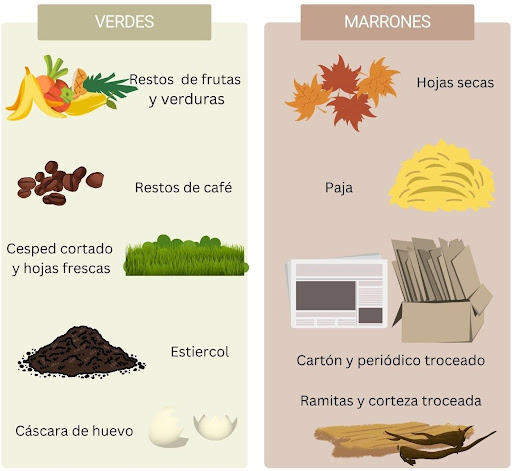

| AL-COMPOST | ||||
| Atras | Inicio | Seccion 1 | Adelante | |
La inhalación o ingestión de compost podría aumentar el riesgo de contraer “Enfermedad de los legionarios”. Esta afección es causada más frecuentemente por la bacteria Legionella pneumophila, que se encuentra en lagos, arroyos y otros terrenos irrigados por agua dulce. Para hacer una composta se necesitan materiales orgánicos, como restos de comida, hojas, ramas, cáscaras de huevo, y otros. Materiales orgánicos Hojas secas y ramas Restos de frutas y verduras Cáscaras de huevo Restos de café y bolsitas de té Residuos de poda Aserrín Paja Papel y cartón Estiércol de pollo, vaca y caballo Recortes de céspedMateriales para la compostera Cubeta o huacal Tierra Pala Jarra con agua Guantes de jardinería Costales o plástico de tamaño variable Compostera o recipiente Puedes comunicarte al siguiente numero 55********  |
||||
| AL-COMPOST | ||||